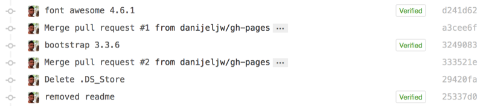

breakfast is served
Who wants breakfast at the Haus of Danni-Jel ? You do, bitches :P

Who wants breakfast at the Haus of Danni-Jel ? You do, bitches :P
Logged into GitHub today and noticed that some of my commits have been rolled into a globally used Bootstrap theme ! So much fun !

Fuck yeah !
Arriving back here in Adelaide on March 3rd this year, one of the first things I did was take to social platform Grindr to get a feel from everyone where the best coffee shops were. Yesterday I was talking to Jakey and asked him if he’s ever heard of Paddy’s Lantern. Unfortunately not, and I did leave it to the last two of places to still check out.
I can’t remember who referred me this venue, but thank you, whoever you are ! It was an absolute delight !

Nested in the suburban district of Adelaide hidden amongst the old houses at 219 Gilbert Street, this little niche cafe can be found.
The food was amazing, coffee was amazing and to top it off - the service was brilliant !
I picked myself the 2 Fried Eggs w/ Spicy Relish on Sourdough Toast and at only $13 this was a total bargain ! You can’t go wrong with the perfectly cooked eggs, rustic sourdough, and devilish homemade spicy relish. Mmmmm !

I also got my standard large size soy latte, no sugar as this is what I really came for. Keeping up standards, I had it served in a takeaway cup. I was a little taken back by the service of being offered my cup still on a saucer, and not just handed to me.

The print on the cups is faded, but even so it’s still so cute ! 😊 I can’t delay my observations of a full bodied flavour with amazing texture steamed perfectly and no burning with a lasting aroma - wow ! This has to be the coffee in Adelaide. They deserve the 4½ stars awarded to them on Yelp! too !

If you’re in the area and you want amazing breakfast, please head on down there, bring your partner, work colleagues or a friend and enjoy the simplicity of the atmosphere, the warmth of the service, the spectacular tastes of the products and most importantly - experience it for yourself !
Oh no, what’s he done ? Jake’s given me his car for the day !

This poor man is always tired, stressed or sleeping. What do you think I’m gonna do today ? That’s easy. I’m gonna wash his car for him and surprise him at the end of the day 😄
I went to the RepCo or whatever it’s called near my house and got some supplies. When I was young I had a weekend job that saw me travelling to car yards each Saturday morning and I’d wash the cars. It wasn’t how many cars were washed per hour, it was here’s $150, go was as many cars as you can per hour for 3 hours. Not bad when you’re 14 !
Men like pink, right ? Well, I’m a man and I’m not afraid of pink, and I love the bubblegum smell of the detergent I picked for this job too!

So how do I go with this job ? Fantastic darling, absolutely fantastic. I remember Jake saying to me that the one time he goes to wash his car, and so does the whole of Adelaide. LOL This is going to be perfect opportunity for me to do something for him, and him alone. It’s not a present. It’s not something I’ve made. It’s something I can do for the sake of doing it for him because this is what real love is about. It’s what you can do for that person to make their life a little better. Call it a miracle, if you will, I try to perform a miracle each day for Jake. That’s always on my agenda.

To say that washing his car was worth it would be an understatement. It saved Jake so much time and effort; and now it’s one less thing that he can worry about.
But he’s coming over for dinner tonight, yeah, it’s not like we’re never getting married or anything, so may as well show him that I can cook, and well sic., so what do I make him ? I know…his favourite dish - Lamb ! Best part is, I’ve not cooked lamb for anyone … EVER !
Obviously it was good when you see someone staring on at their food wanting do devour it, ‘eh ?

I think our collaborative effort to make dinner, Jake made the veggies, I made the sauce just for his palate and the lamb to my own style, and it came out pretty swish if you ask me !

Would you say that was a great dinner Jake ? Oh what’s that ? 10/10 ? Lee Lin Chin would be proud ! 5 Stars !

Tonight we had lemon, garlic and herb roast chicken with middle bacon to cover served with roast potato and carrot !

Apparently we’re recovering from the weekend, but why not have a glass of red, just ‘cos ?

Spun up some souflée realness using Nutella too !

Do you think this was a good mean Jake ? 8.5/10 ! Sweet as ! The potatoes were a little hard :(

Jake brought me out for breakfast this morning. We went to the cafe that sits behind the playground he talks so often and fondly of.
He bought me french toast. Yummy ! 😋🇫🇷🍞

He got a yucky toasted cheese & ham sandwich ‘cos they don’t have bacon 😂
Below are the Unicode hex numbers for the most common symbols used to represent Mac control keys. You can type these by finding the numbers in the Character Palette or similar font inspector program, or by using the Unicode Hex Keyboard (key in Option plus the number). Lucida Grande is a good font to use.
Apple/Command: 2318 ⌘
Alt/Option: 2325 ⌥
Shift: 21E7 ⇧
Delete: 232B ⌫
Control: 2303 ⌃
Apple Logo: F8FF or Option-Shift-K
Every once in a while someone will come through your life and the whole game will change.
I’ve been lucky enough in my life that I’ve always been the one to walk away and not regret the choice to do so. I’m not a cold-hearted person or without any emotions, rather they’re difficult to be interpreted by other people and it’s without regret that I’ve not come across someone that’s going to make me bring these to the surface.
Recently I wrote about someone special that came into my life but I haven’t been able to get the whole story down pat and I think it’s time I put these memories into words so I don’t forget who they were, even if I don’t see them again. 😔
Before I left Sydney, I spoke a colleague of mine (from a different department) named Gillian who told me I need to start writing my memories down and keeping them so that one day I can look back on it all and reflect. It’s funny that I was only thinking of Gillian the other day when she wrote to me via email today to enquire how I was. Thank you Gillian 😊 I haven’t forgotten you and I have thought about you a few times since leaving Sydney. I’m glad you’re doing well ✌️
So back to my story - I get easily side-tracked - we met and we went from there. First meeting under the Semaphore Clock Tower we went for a walk down the jetty and then along the foreshore and eventually landed ourselves a table at a local cafe. From there we went to K-Mart and picked out some bedsheets for him and then back to each other’s respective home.
I saw him again, and again, and again ! What was it that drew me to this person above anyone else that I’ve met in my life ? Something twinged inside me and for a long time I’ve never been able to put my thumb on it. All I knew was this was good, and I was happy. I started to open up emotionally and discovered that I could evolve in ways I didn’t know existed within the parameters of my soul.
I’ve spoken many times in my life about the three aspects that make you human. They are your body, your mind, and your soul. But what about the heart ? Do I try to confuse everyone by saying the soul is the heart ? No. Never. The heart is the fourth aspect of being human, and this is created when two people meet for the first time.
How so, I hear you ask ? Well, let me explain.
The heart is created the first time two people come together. It’s an emotional connection. When you care about someone, the distance between the two of you is the stretch of that connection and that’s where the heart is physically born. If you lived on this earth as the only person in existence you would never know the aspect of the heart as it cannot be created by yourself. It’s shared from the components the two of you put into the middle.
If you believe with all your heart that you belong with that person, then you will reside there for an eternity of time and I don’t care what anyone says, they’ll never forget you. Even after the last goodbye.
Promise you won’t forget me, ever. Not even when I’m a hundred.
I won’t even need to ask this person to not forget me if I’ve created the heart with them. Not even when I’m a hundred, because I’ll be with them forever. I entrust my heart to this person and know that even if I die alone I will not be forgotten as the memories will carry on with them. ☺️
So as time goes on, we start to tread waters and I’m finding myself falling in the best possible way - without boundaries. Soon before long I found myself thinking about them every day and occupying a major percentage of where this amazing ecstacy in my life comes from.
Though there wouldn’t be a story if there wasn’t at least one broken heart, a moment of silence and a phoenix to rise from the fire.

Have you ever felt that it was hard to say goodbye ? Have you ever been so lucky ?
I remember the last time I saw my grandfather in hospital and knew this would be the last time I ever got to see him alive. Did I feel sad ? No. Not really. Call me cold-hearted. I don’t care. It’s a fact.
I celebrated my love for him as my mentor when growing up and showing me the endurance of love through the years that I had with him. See, the situation is a little more tangled that I let you know. So I’ll explain. My grandmother had a memory problem and creating short-term and keeping long-term memories was a problem. My memories of my grandparents has always been my grandfather staying close to her, reminding her where she is, and what she’s doing. He kept a close eye on her so she didn’t get lost and always was safe and sound. It sounds like he was controlling, but not really. He refused to put her in a nursing home. That was his wife who he’d spent all those years of marriage with and he wanted to keep her close to him now in the time of her need. Can anyone else say they’ve seen this kind of dedication ? I hope so !
After my grandmother passed away I kind of remember a shift in my grandfather’s emotions, he let go. That was his life that had passed away from his hands. Sure, he had three daughters, one of which is my mother but at some point his heart broke. The only part of his heart that still existed was the memories he shared and created with the heart that was born between the two of them. They’re names are Denise and Thelma. I share part of my name with my grandfather. The James component. So regardless of whether I had a heart with him or not, I share something with him eternally. 😁
I didn’t have to say goodbye to my grandfather, or my grandmother. They live eternally with me in my memories. I never let them go, they stay with me every day.
In a previous post, I mentioned that a friend said to me that I’m never truly in love with someone and I agree. But that was before I met this person. I could say their name, but at this point in time I need to let them settle on how things have come about and I need to take this time to reflect too.
We didn’t do anything wrong. Not at all. It’s just that we’ve got to take some time to evaluate the situation at hand.
Myself, I am an emotionally strong person. I’ve spent years and years learning how to connect with my emotions and trying to understand them better. I’m an Aries. And yes I do believe firmly in the science of astrology. It’s not verbatim, I can’t prove this is right or wrong. Just accept it, that’s all.
In the past you could say I was a violent person. I would lash out and let my emotions rule and control my behaviour without much room for a buffer. Then I said something to someone one day in a fit of anger and the feeling that came over me after letting those words go showed me that you truly can stab someone (no pun intended) with just words and words alone. I had literally put a knife deep into their soul and cut them. Was I sorry for what I said ? No. And I’m still not. I don’t like her. She’s a bitch. What I took away from that was that it’s now time to sit back, see what I’m doing, what I’ve done, and look to where I want to be. So, I now control my anger. I don’t lash out with horrible words or go break plates or drive my car through shop windows - yes that’s a true story and I’ll write about it one day too.
For many years I’ve had the pent up emotion inside of me that’s been yearning to find a way to express. That emotion can ignite the hearts of stars across the night sky. Fuse rubies in the hearts of planets. Dry entire oceans across the lands. Drench the forests in torrents of waters. There is no limit to this emotion.
It found an outlet. The very person that I’ve been talking about this whole time.
It’s the single most truest emotion of all my repository of emotions and it comes without end to expression once we travel it’s road.
Unfortunately I haven’t been able to control this emotion. It comes out so naturally, and because it does this and being so strong, it’s like a tidal force against a single flower a world with an unchanging night sky, an endless white desert across the ground. Nothing exists here except this lone flower.

I didn’t pull back, I was so enraptured. This is my downfall.
My downfall was that I didn’t heed the notice given to me and pull back a little bit. This lone flower stands by itself in the endless desert and it sees no stars or sun. Just an unchanging foreverness. It’s always been like this.
So now the flower has suffocated under the tsunami of emotions and I’m left in a place where I can only sit back to contemplate.
After a reflection on the words said to me tonight, I’ve come to the conclusion of two things.
The first being that this person might be scared of love and never experienced it properly before and they don’t know what to do with these feelings. I should have recognised this and let them time to process this and take it slowly and thoughtfully. Yes, I’m well established in my principles and behaviours. I don’t like to admit this, but I’m really not perfect. I’d like you to believe I was and write whole books on how to be a respectable person.
But who am I to instruct you ? I’m not !
The second being this person seems to think the ONLY reason I stay in Adelaide is because of them and I hate it here.
I take these two main instruments and carve them into two lessons for myself.
I’d like to think I’ve reached the peak of my evolution. But didn’t I say that to myself when I was 23 too ? Didn’t I stand there in front of a whole group of people saying something stupid like “There’s nothing left for me to learn in this world. I’ve learned all there is to know.”
Fucking hell I was a stupid young man. Who ever said there’s nothing left to learn ? Well, obviously me. Even just tonight I said something just as selfish and stupid.
I’ve reached the peak of my evolution, and there’s nothing left to aspire to.
FUCK ! NO !
No on so many levels. Just no. Why ? Because I said that just at the beginning of this year and then what ? Well, along came this person, and I learned something totally new. Emotions. Ways of being. Personality traits. Behaviours. Laughter. Sadness. Anticipation. So many things I can’t even being to process them all.
Referring to an email I send to Gillian earlier today whilst waiting out the front of his work to finish, I’ll pull the most quintessential quote out into the open…
…then I remember that this is my home…
That’s right. Adelaide is my home. I got off that plane and I made a decision to live here and make my life. I think I’ve been so bored without work that I’m going crazy in my own mind a little bit and need something to focus on. Because of that I’ve said some really stupid thoughts which have been stirring around in my mind. I’ve been hating on Adelaide and that has created an unnecessary pressure on this person and can it be possible that they now feel like I’m only here because of them and I want to leave ?
…I’ve been so caught up being emotionally moved by him that I forgot to expose him to my other temperaments.
I forgot to show him where my true love lies in Adelaide. The rhythm and the beat of the people. Who knew me in Sydney ? Did you ? Maybe you did and maybe you didn’t. What was that one thing I always said I loved about Australia ? It was Adelaide and her people.
This person deserved to see my other temperaments and unfortunately I didn’t reign back on the prime emotion and look where it’s led us now.
I don’t know how many times I heard or read the words “you scare me”. Why was I created so scientifically intelligent that I’m so readily and easily able to overlook the most simple things in life - what is right before me. I’m always in the dark.
So now, we’re at a point where I’ve listened, learned, and will continue to learn. I’ve said my true representation of what I want. I want them to come back.
There’s never been a time that I was scared until now. Only a few words ushered have given me a whole new perspective. They’re going to be quiet for a while. That’s OK. I can deal with that. I want them to take what they need from this. It’s the part that followed that scared me. 💀
I may not come back fyi
Right now I’ve come to a point with this person where I know there is a possibility that maybe they might not come back, and all I can say is this:
How lucky I am to have something that makes saying goodbye so hard.
So, did I start this article with the right words ? Clearly not. Let me try that again.
I’ve been UNLUCKY enough in my life that I’ve always been the one to walk away and not regret the choice to do so.
There’s a Banksy image referred to as “Girl With Balloon” that represents letting go of what makes you sad. I’m not sure I agree with this sentiment.

To me this image is a sole representation of never giving up. The little girl represents me and the balloon him. I’m reaching out, but I’m not gonna run yet. The balloon will hover there and when it’s ready it will go whichever way it wants. If it floats back towards me, I’m going to hold it by the thread between my fingers and slowly hold the thread with more fingers the closer the balloon is ready to come. If ever. 😊
To the strongest woman I’ve ever known. Raising three boys, all ratbags 😁 Our mother, is the bone of our spines, keeping us straight and true. She is our blood, making sure it runs rich and strong. She is the beating of our hearts. I cannot imagine a life without her. To the world you are a mother, to your three ratbags you are our world. Happy Mothers Day Mum 😘💐🌟

Convert from MP4 to WebM standard:
1
| |
{kind=link}